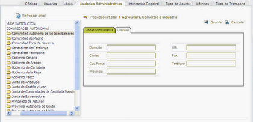

Para modificar una unidad administrativa pulsar sobre el icono  Editar. Una vez editada la infomación
pulse el botón Editar. Una vez editada la infomación
pulse el botón  Guardar para modificar la unidad y volver al listado de unidades o el botón Guardar para modificar la unidad y volver al listado de unidades o el botón
 Cancelar para ir al listado sin modificarla. Cancelar para ir al listado sin modificarla.

En la pestaña Unidad administrativa podrá modificar los siguientes datos:
- UID: El código identificación de la unidad administrativa no se podrá modificar. Sólo aparece como consulta.
- CIF: Modifique, si lo desea, el código de identificación fiscal correspondiente. Registro Presencial no valida el dígito de control.
- Abreviatura: Moficique un nombre abreviado que identifique la unidad administrativa. Este dato es obligatorio.
- Nombre: Modifique el nombre para identificar la unidad administrativa. Este dato es obligatorio.

En la pestaña Dirección podrá modificar los siguientes datos :
- Domicilio: Puede escribir hasta 240 caracteres alfanuméricos.
- URI: Modifique la Uri de la unidad administrativa. Es un dato meramente informativo.
- Ciudad: Modifique la ciudad de la unidad administrativa.
- Fax: Modifique el número de fax de la unidad administrativa. Es un dato meramente informativo.
- Código Postal: Modifique el código postal para la unidad administrativa. Es un dato meramente informativo.
- Teléfono: Modifique el número de teléfono para la unidad administrativa. Es un dato meramente informativo.
- Provincia: Modifique la provincia de la unidad administrativa.
|